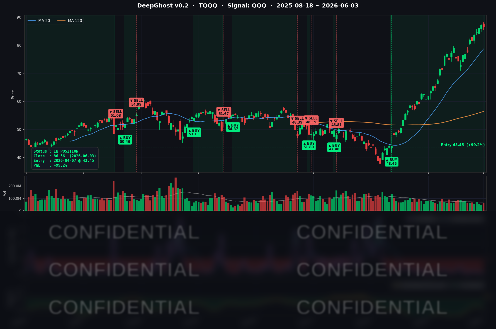

국채 금리가 불안하여, 눈치보기 장세가 지속되고 있습니다.
트럼프는 이번주에 종전합의가 된다는데 시장은 물음표입니다.
금리가 여기서 더 튀면 시장에 충격이 올 수도 있습니다.
📊 오늘의 매매 신호
| 항목 | 내용 |
|---|---|
| 오늘 할 일 | ✅ 아무것도 안 해도 됩니다 |
| 포지션 상태 | 📈 TQQQ 보유 중 (IN POSITION) |
| 매수 진입일 | 2026-04-07 (57일째) |
| 진입가 → 현재가 | $43.45 → $86.56 |
| 현재 포지션 수익 | +99.22% |
TQQQ 시그널 — IN POSITION
현재 상태: 매수 포지션 유지 중 | 누적 수익률 +99.22%

오늘 미국 시장 — 시황 요약
지수 마감
| 지수 | 종가 | 등락률 |
|---|---|---|
| S&P 500 | 7,553.68 | -0.74% |
| Nasdaq Composite | 26,853.98 | -0.89% |
| Dow Jones | 50,687.07 | -1.21% |
| Russell 2000 | 2,893.51 | -1.31% |
| QQQ | 744.21 | -0.26% |
| TQQQ | 86.56 | -0.76% |
오늘 미국 증시는 전방위 위험회피(Risk-off) 흐름이 전개됐습니다. 다우(-1.21%)와 Russell 2000(-1.31%)이 하락을 주도했고, S&P 500보다 빅테크 비중이 큰 나스닥(-0.89%)이 더 약했습니다. 그러나 같은 나스닥 안에서도 META(+4.24%) / INTC(+4.43%) / QCOM(+3.81%)이 급등한 반면 NVDA(-3.62%) / MSFT(-3.17%) / AMZN(-2.53%)이 동반 급락하는 극심한 내부 분화가 확인됐습니다. QQQ(-0.26%)가 SPY(-0.70%) 대비 상대적으로 방어된 것은 META의 +4.24%가 빅테크 약세를 부분 상쇄했기 때문입니다.
국채 금리 & 연준
| 만기 | 수익률 | 전일 대비 |
|---|---|---|
| 3개월 | 3.623% | +0.5bp |
| 5년 | 4.214% | +3.7bp |
| 10년 | 4.491% | +3.6bp |
| 30년 | 4.990% | +2.3bp |
중기물(5년 +3.7bp)과 10년물(+3.6bp)이 동반 상승하며 듀레이션이 긴 빅테크 멀티플을 압박했습니다. 10년물과 3개월물 스프레드는 +86.8bp로 전일(+83.7bp)보다 추가 확대돼 경기침체 시그널은 사실상 해소된 상태입니다. 10년물 4.491%는 4.50% 저항선을 다시 노크하고 있습니다.
오늘은 연준 위원 공식 발언이 없었습니다. ADP 122K(예상 117K) + ISM Services 54.5(예상 53.8) + Prices Paid 71.3(+0.6p) 조합이 "노동시장 견조 + 서비스 인플레 압력" 으로 해석되며 채권 매도가 발생했습니다. CME FedWatch 기준 6월 인하 확률은 사실상 0%, 9월 인하 확률도 일부 후퇴한 상태입니다. 6월 4일(목) Bowman 부의장 청문회와 6월 5일(금) 5월 고용보고서(NFP)가 단기 금리 경로의 핵심 변수입니다.
오늘의 핵심 이슈
1. AVGO 어닝 비트 — AI 매출 $10.8B (+143% YoY), Q3 가이던스 $29.4B 큰폭 상향
Broadcom이 장 마감 후 Q2 FY2026 실적을 발표했습니다. AI 반도체 매출이 $10.8B으로 사전 가이던스 $10.7B을 상회하며 전년동기 대비 +143% 성장했습니다. 더 중요한 것은 Q3 FY2026 가이던스로 매출 약 $29.4B(+84% YoY), Non-GAAP 영업이익률 67%를 제시했다는 점입니다. 시장 컨센서스($28B 수준)를 크게 상회하는 어닝 비트로 평가됐고, 시간외 거래에서 AVGO는 강세를 보였습니다. 정규장 종가는 어닝 대기로 -0.49% 약보합 마감했으나, 이 결과는 6월 4일 반도체 섹터 전반(특히 ASIC·커스텀 실리콘 테마)에 강한 모멘텀을 제공할 가능성이 큽니다.
2. META 엔터프라이즈 AI 비즈니스 에이전트 출시 → +4.24% 급등
Meta Platforms가 WhatsApp·Instagram·Messenger 채널에서 기업의 일상 상거래 업무를 자동화하는 엔터프라이즈급 AI 비즈니스 에이전트를 공식 발표했습니다. 직접적인 수익화 경로(WhatsApp Business + Instagram Shop)가 명확하다는 점이 호평을 받았습니다. 동시에 Arete가 META 등급을 Neutral → Buy로 상향하고 목표주가를 $614 → $735로 제시한 점, Goldman Sachs가 하이퍼스케일러의 CapEx 전망을 FY2030 누적 $4.5T → $5.3T로 상향한 점이 모멘텀을 강화했습니다.
3. NVDA -3.62% / MSFT -3.17% / AMZN -2.53% — 빅테크 광범위 매도
NVDA는 Computex 키노트(6/2) 이후 차익실현이 이어지며 -3.62% 추가 하락했습니다. 5월 14일 사상 최고가 $236.54 대비 약 -9~10%의 조정 영역에 진입했습니다. "AI 투자 내러티브가 데이터센터에서 컨슈머 PC로 확장"되며 단기 멀티플 정당화 부담이 커진 것이 매도 배경입니다. MSFT는 트럼프 AI 행정명령·FTC 조사 확대·Copilot 장애 악재가 연장되며 -3.17% 추가 하락했고, AMZN은 개별 헤드라인 없이 -2.53% 동반 약세를 보였습니다. 세 종목이 동시에 -2.5% 이상 하락한 것은 5월 중순 이후 처음입니다.
매크로 & 원자재
| 항목 | 수치 | 비고 |
|---|---|---|
| WTI 원유 | $95.57 | +1.93% |
| Brent 원유 | $97.27 | +1.32% |
| 금 | $4,458.80 | -0.68% |
| VIX | 16.06 | +1.84% |
| 공포탐욕지수 | 55~58 | 탐욕(Greed) 구간 |
WTI가 3거래일 연속 상승하며 $95선을 회복했습니다. 미-이란 협상이 호르무즈 해협 봉쇄 지속 속에 실질 진전이 없고, 미국 원유 재고는 6주 연속 감소(-7.97M bbl) 흐름입니다. OPEC+ 6월 7일 장관급 회의에서 7월 출하량을 일 +188K bbl 소폭 증산으로 결정해 시장의 추가 증산 기대보다 보수적으로 나왔습니다. 금은 강달러·금리 상승에 헷지 수요가 일시 후퇴하며 -0.68% 약세였습니다. VIX 16.06은 안정 구간(15~17 밴드) 상단으로 이동했지만, 절대 레벨은 여전히 20 미만으로 안정된 상태입니다.
주요 종목 동향
| 종목 | 전일 종가 | 당일 종가 | 등락률 | 비고 |
|---|---|---|---|---|
| AAPL | 315.20 | 310.26 | -1.57% | UBS "WWDC 2026 의미 있는 긍정 촉매 어렵다" 노트. 사상최고가 다음날 차익실현 |
| NVDA | 222.82 | 214.75 | -3.62% | Computex 이후 차익실현 가속. 5/14 ATH 대비 -9.3% 조정. "AI 1차 사이클 피크" 내러티브 |
| MSFT | 441.31 | 427.34 | -3.17% | 트럼프 AI 행정명령·FTC 조사 악재 연장. Copilot 장애 후폭풍 |
| GOOGL | 361.85 | 358.99 | -0.79% | $80B 증자 발표 후폭풍 진정. Berkshire 참여 vs ATM $40B 오버행 균형 |
| META | 597.63 | 622.98 | +4.24% | 엔터프라이즈 AI 비즈니스 에이전트 출시. Arete 매수 상향 TP $735 |
| AMZN | 256.52 | 250.02 | -2.53% | AWS 경쟁 우려 + AVGO ASIC 모멘텀에 따른 Trainium 상대 약세 |
| TSLA | 423.74 | 423.70 | -0.01% | 빅테크 매도세 속 상대적 안정. 개별 헤드라인 없음 |
| NFLX | 83.33 | 81.52 | -2.17% | 8거래일 연속 하락. 광고·구독 모멘텀 회의감 지속 |
| AVGO | 481.57 | 479.23 | -0.49% | 정규장 어닝 대기 보합. 마감 후 AI 매출 $10.8B (+143% YoY) 비트, Q3 가이던스 $29.4B 상향 |
| QCOM | 240.84 | 250.01 | +3.81% | 전일 +5.17% 연장. 6/24 Investor Day + ByteDance 커스텀 AI 칩 공급 보도 |
| INTC | 107.93 | 112.71 | +4.43% | Citi TP $95 → $130 매수 유지 후속 매수세. AI PC SoC 경쟁 차별적 강세 |
Ghost.AI — Quantitative AI Investment
Model: DeepGhost v0.2 | Transformer-Based Deep Learning
Coverage: 13 tickers | Updated every trading day after US market close
⚠️ 본 자료는 정보 제공 목적으로만 작성되었으며 투자 권유가 아닙니다. 모든 투자의 책임은 투자자 본인에게 있습니다. 과거 성과가 미래 수익을 보장하지 않습니다.
[유의사항]
고스트에이아이 주식회사는 「자본시장과 금융투자업에 관한 법률」 제101조에 따른 유사투자자문업자로 등록된 사업자입니다.
- 본 서비스는 불특정 다수를 대상으로 발행되는 단방향 정보 제공 서비스이며, 투자자 개인의 재산 상황·투자 목적·위험 선호도를 반영한 개별 투자 조언이 아닙니다.
- 고스트에이아이 주식회사는 고객과 쌍방향 의사소통(개별 상담, 맞춤형 자문 등)을 제공하지 않습니다.
- 본 콘텐츠는 투자 권유 또는 매매 주문의 청약·청약의 권유에 해당하지 않으며, 최종 투자 판단 및 그에 따른 손익의 책임은 전적으로 투자자 본인에게 있습니다.
고스트에이아이 주식회사 | 유사투자자문업 등록번호: 제2025-000호